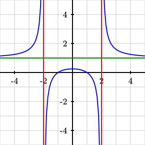
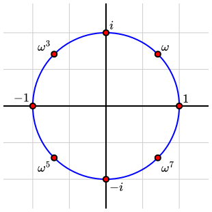

<diagram dimensions="(300,300)" margins="5">
<definition>x1=1</definition>
<definition>x2=4</definition>
<definition>y1=1</definition>
<definition>y2=5</definition>
<definition>p=(x1,y1)</definition>
<definition>q=(x2,y2)</definition>
<definition>r=(x2,y1)</definition>
<coordinates bbox="(-1,-1,6,6)">
<axes decorations="no" xlabel="x" ylabel="y"/>
<group outline="none">
<polygon points="(p,r,q)" stroke="red"/>
<angle-marker points="(r,p,q)" stroke="black">
<m>\theta</m>
</angle-marker>
<line endpoints="(p, q)" stroke="blue" infinite="yes"/>
</group>
<label anchor="((x1+x2)/2,y1)" alignment="south">
<m>\Delta x</m>
</label>
<label anchor="(x2,(y1+y2)/2)" alignment="east">
<m>\Delta y</m>
</label>
</coordinates>
</diagram>
Chapter 7 Examples with source
This chapter presents a series of PreFigure diagrams along with their source. These examples may provide a starting point for authors to explore in the PreFigure Playground.
 1 
davidaustinm.github.io/prefigureSource.
Source.
<diagram dimensions="(300,300)" margins="5">
<coordinates bbox="(0,0,10,10)">
<grid-axes decorations="no"/>
<definition>p1=(1,2)</definition>
<definition>p2=(8,8)</definition>
<definition>L1=(p1,p2)</definition>
<definition>q1=(1,7)</definition>
<definition>q2=(8,4)</definition>
<definition>L2=(q1,q2)</definition>
<line endpoints="L1" stroke="blue"
infinite="yes"/>
<line endpoints="L2" stroke="blue"
infinite="yes"/>
<definition>p=intersect((L1,L2))</definition>
<angle-marker points="(q2,p,p2)"
clear-background="yes">
<m>\theta</m>
</angle-marker>
<point p="p"/>
</coordinates>
</diagram>
Source.
<diagram dimensions="(300,300)" margins="5">
<coordinates bbox="(0,0,10,10)">
<grid-axes decorations="no"/>
<triangle vertices="((1,1),(3,2),(1,5))" labels="A,B,C"
show-vertices="yes" point-fill="orange"/>
<definition>vertices=((4,4), (8,1),(7,8))</definition>
<triangle vertices="vertices" labels="D,E,F"
angle-markers="yes"/>
</coordinates>
</diagram>

Source.
<diagram dimensions="(300,300)" margins="0">
<definition>f(x)=(x^2-1)/(x^2-4)</definition>
<coordinates bbox="(-5,-5,5,5)">
<grid-axes/>
<graph function="f"/>
<line endpoints="((-2,-4),(-2,4))" infinite="yes" stroke="red"/>
<line endpoints="((2,4),(2,-4))" infinite="yes" stroke="red"/>
<line endpoints="((4,1),(-4,1))" infinite="yes" stroke="green"/>
</coordinates>
</diagram>
Source.
<diagram dimensions="(300,300)" margins="5">
<definition>theta=radians(80)</definition>
<definition>p=(cos(theta),sin(theta))</definition>
<definition>q=(cos(theta),-sin(theta))</definition>
<definition>origin=(0,0)</definition>
<definition>one=(1,0)</definition>
<coordinates bbox="(-1.5,-1.5,1.5,1.5)">
<grid-axes decorations="no"/>
<polygon points="(one,origin,p)" stroke="red"/>
<polygon points="(one,origin,q)" stroke="red"/>
<circle center="(0,0)" radius="1" stroke="blue"/>
<point p="p">
<m>(\cos(\theta),\sin(\theta))</m>
</point>
<point p="q" alignment="se">
<m>(\cos(\theta),-\sin(\theta))</m>
</point>
<angle-marker points="(one,origin,p)" stroke="black">
<m>\theta</m>
</angle-marker>
<angle-marker points="(q,origin,one)" stroke="black">
<m>-\theta</m>
</angle-marker>
</coordinates>
</diagram>

Source.
<diagram dimensions="(250,270)" margins="5">
<definition>a=3</definition>
<definition>b=4</definition>
<definition>c=sqrt(a^2+b^2)</definition>
<definition>phi=acos(a/c)</definition>
<definition>d=a*cos(phi)</definition>
<definition>p=a*(cos(phi), sin(phi))</definition>
<coordinates bbox="(-2.5,-5,7.5,6)" aspect-ratio="1">
<rectangle lower-left="(0,-c)" dimensions="(d,c)"
fill="skyblue"/>
<rectangle lower-left="(d,-c)" dimensions="(c-d,c)"
fill="springgreen"/>
<transform>
<rotate by="phi-pi/2" degrees="no"/>
<rectangle lower-left="(-a,0)" dimensions="(a,a)"
fill="skyblue" stroke="black"/>
<rectangle lower-left="(0,a)" dimensions="(b,b)"
fill="springgreen" stroke="black"/>
</transform>
<rectangle lower-left="(0,-c)" dimensions="(c,c)"
stroke="black"/>
<line endpoints="(p,(d,-c))" dash="8 8" stroke="black"/>
<triangle at="triangle" vertices="((0,0),(c,0),p)"
stroke="black"/>
</coordinates>
</diagram>

Source.
<diagram dimensions="(300,300)" margins="5">
<definition>
alignments=['ne','ne','ne','nw','nw','sw','se','se']
</definition>
<definition substitution="no">
labels=['1','\omega','i','\omega^3','-1','\omega^5','-i','\omega^7']
</definition>
<definition>f(t)=(cos(pi*t/4),sin(pi*t/4))</definition>
<coordinates bbox="[-1.4,-1.4,1.4,1.4]">
<grid at="grid" />
<axes at="axes" labels="no" />
<circle at="unit-circle" center="(0,0)" radius="1" stroke="blue"/>
<repeat parameter="k=0..7">
<point at="point" p="f(k)" alignment="alignments[k]">
<m>${labels[k]}</m>
</point>
</repeat>
</coordinates>
</diagram>
Source.
<diagram dimensions="(300,300)" margins="5">
<definition> f(x)=0.1*(x^4-10*x^2)</definition>
<definition> fp(x)=deriv(f, x)</definition>
<definition> fpp(x)=deriv(fp,x)</definition>
<coordinates bbox="[-4,-4,4,4]">
<grid-axes xlabel="x" ylabel="y"/>
<graph function="f"/>
<label p="(3.3,1)" alignment="center" clear-background="yes">
<m>f</m>
</label>
<graph function="fp" stroke="red"/>
<label p="(2.5,1)" alignment="center" clear-background="yes">
<m>f'</m>
</label>
<graph function="fpp" stroke="green"/>
<label p="(1.6,1)" alignment="center" clear-background="yes">
<m>f''</m>
</label>
</coordinates>
</diagram>
Source.
<diagram dimensions="(300,300)" margins="5">
<definition>f(x)=7-(x+1)^2/2</definition>
<definition>x0 = 1</definition>
<coordinates bbox="(-8,-8,8,8)">
<grid-axes xlabel="x" ylabel="y"/>
<graph function="f"/>
<tangent-line function="f" point="x0" name="L"/>
<point p="(x0,f(x0))" alignment="se"/>
<definition>x1 = intersect(L,-1)</definition>
<repeat parameter="x in (x0, x1)">
<line endpoints="((x,0),(x,0))"
endpoint-offsets="((0,-3),(0,3))"
tactile-endpoint-offsets="((0,-18),(0,0))"
stroke="black"/>
</repeat>
<label anchor="(x0,0)" alignment="north">
<m>x_0</m>
</label>
<label anchor="(x1,0)" alignment="ne">
<m>x_1</m>
</label>
</coordinates>
</diagram>

Source.
<diagram dimensions="(300,300)" margins="5">
<definition>f(x)=sin(x)</definition>
<definition>g(x)=cos(x)</definition>
<definition>a=intersect((f,g),1)</definition>
<definition>b=intersect((f,g),4)</definition>
<coordinates bbox="(-1,-1.5,5,1.5)">
<grid-axes decorations="no"/>
<area-between-curves functions="(f,g)" domain="(a,b)" fill="lightgray"/>
<graph function="f"/>
<graph function="g"/>
<line endpoints="((a,0),(a,0))" endpoint-offsets="((0,-3),(0,3))"/>
<label anchor="(a,0)" alignment="south" offset="(0,-7)">
<m>a</m>
</label>
<line endpoints="((b,0),(b,0))" endpoint-offsets="((0,-3),(0,3))"/>
<label anchor="(b,0)" alignment="south" offset="(0,-4)">
<m>b</m>
</label>
</coordinates>
</diagram>
Source.
<diagram dimensions="(300,300)" margins="5">
<definition>f(t,y) = t-y</definition>
<coordinates bbox="[-4,-4,4,4]">
<grid at="grid"/>
<axes at="axes" xlabel="t" ylabel="y"/>
<slope-field at="slope-field" function="f" outline="yes"/>
<group at="solutions" outline="tactile">
<repeat parameter="k=-4..4">
<plot-de-solution at="solution" function="f" t0="0" y0="k" t1="4" stroke="orange"/>
<point at="initial-value" p="(0,k)" size="4" fill="orange"/>
</repeat>
</group>
</coordinates>
</diagram>
Source.
<diagram dimensions="(300,300)" margins="5">
<definition>f(t,y) = (y[1], -pi*y[0]-0.3*y[1])</definition>
<coordinates bbox="[-1,-3,6,3]">
<grid-axes xlabel="t"/>
<de-solve function="f" t0="0" t1="bbox[2]" y0="(0,2)"
name="oscillator" N="200"/>
<plot-de-solution at="x" solution="oscillator" axes="(t,y0)"/>
<plot-de-solution at="xprime" solution="oscillator"
axes="(t,y1)" stroke="red" tactile-dash="9 9"/>
<legend at="legend" anchor="(bbox[2], bbox[3])" alignment="sw"
scale="0.9" opacity="0.5">
<item ref="x"><m>x(t)</m></item>
<item ref="xprime"><m>x'(t)</m></item>
</legend>
</coordinates>
</diagram>
Source.
<diagram dimensions="(300,300)" margins="5">
<definition>v1 = (2,1)</definition>
<definition>v2 = (-1,1)</definition>
<definition>a=3</definition>
<definition>b=2</definition>
<definition>w=a*v1+b*v2</definition>
<coordinates bbox="(-3,-3,8,8)">
<axes decorations="no"/>
<grid basis="(v1,v2)" stroke="lightgray"/>
<group outline="tactile">
<vector v="v1" stroke="blue"/>
<vector v="v2" stroke="blue"/>
<vector v="w" stroke="red"/>
</group>
<label anchor="v1" alignment="e" clear-background="yes" offset="(5,0)">
<m>{\mathbf v}_1</m>
</label>
<label anchor="v2" alignment="n" clear-background="yes" offset="(0,5)">
<m>{\mathbf v}_2</m>
</label>
<label anchor="w" alignment="n" clear-background="yes" offset="(0,5)">
<m>${a}{\mathbf v}_1+${b}{\mathbf v}_2</m>
</label>
</coordinates>
</diagram>
Source.
<diagram dimensions="(300,300)" margins="5">
<definition>v=(2,1)</definition>
<definition>b=(2,4)</definition>
<definition>bhat=dot(v,b)/dot(v,v)* v</definition>
<definition>bperp=b- bhat</definition>
<coordinates bbox="[-1,-1,5,5]">
<grid-axes at="grid-axes"/>
<line p1="(0,0)" p2="v" infinite="yes" stroke="blue" thickness="2"/>
<label anchor="(4.4,2.5)">
<m>L</m>
</label>
<label anchor="midpoint(b,bhat)" alignment="ne" clear-background="yes">
<m>{\mathbf b}^\perp</m>
</label>
<vector v="bperp" tail="bhat" stroke="gray"/>
<vector v="b"/>
<label anchor="b" alignment="nw">
<m>{\mathbf b}</m>
</label>
<vector v="bhat" stroke="red"/>
<label anchor="bhat" alignment="se">
<m>\widehat{\mathbf b}</m>
</label>
<vector v="v"/>
<label anchor="v" alignment="se">
<m>{\mathbf v}</m>
</label>
</coordinates>
</diagram>
Source.
<diagram dimensions="(300,300)" margins="5">
<definition>graph={1:[3,4,5,5],2:[4,5],3:[4,5],6:[2,4]}</definition>
<coordinates bbox="(-1,-1,1,1)">
<network directed="yes" graph="graph" arrows="middle"
scale="0.8" node-fill="#fcf" seed="1"
labels="yes" tactile-node-size="40">
</network>
</coordinates>
</diagram>

Source.
<diagram dimensions="(300,300)" margins="5">
<definition>graph={1:[3,4,5,5],2:[4,5],3:[4,5],6:[2,4]}</definition>
<network directed="yes" graph="graph" scale="0.7"
node-fill="#fcf" node-stroke="black"
node-style="circle" node-size="15"
arrows="end" seed="1" labels="yes"
tactile-node-size="45">
<edge vertices="(1,2)">4</edge>
<edge vertices="(2,2)" label-location="0.3" loop-scale="(0.8,0.8)">
<m>\alpha</m>
</edge>
<node at="2" style="double-circle"/>
</network>
</diagram>
Source.
<diagram dimensions="(300,180)" margins="5">
<coordinates bbox="(0,0,10,6)">
<define-shapes>
<circle at="A" center="(4,3)" radius="2"/>
<circle at="B" center="(6,3)" radius="2"/>
</define-shapes>
<shape shapes="A,B" operation="difference" fill="#fcf" stroke="black"/>
<shape shape="A" stroke="black"/>
<shape shape="B" stroke="black"/>
<rectangle lower-left="(0,0)" dimensions="(10,6)" stroke="black"/>
<label anchor="(2,3)" alignment="nw"><m>A</m></label>
<label anchor="(8,3)" alignment="ne"><m>B</m></label>
<label anchor="(5,0.5)"><m>A\setminus B</m></label>
</coordinates>
</diagram>
Source.
<diagram dimensions="(300,200)" margins="5">
<coordinates bbox="(0,0,10,9)">
<path start="(1,1)" stroke="black">
<lineto point="(1,8)"/>
<lineto point="(9,8)" decoration="coil; number=5; dimensions=(10,10)"/>
<lineto point="(9,1)" decoration="capacitor; dimensions=(12,15)"/>
<lineto point="(1,1)" decoration="zigzag; number=5; dimensions=(10,10)"/>
</path>
<point p="(1,4.5)" size="20" fill="white" stroke="black"/>
<label anchor="(1,4.5)" alignment="nw" offset="(-5,15)" tactile-offset="(-20,20)"><m>+</m></label>
<label anchor="(1,4.5)" alignment="sw" offset="(-5,-15)" tactile-offset="(-20,-20)"><m>-</m></label>
<label anchor="(9,4.5)" alignment="west" offset="(-15,0)">
<m>C</m>
</label>
<label anchor="(5,1)" alignment="north" offset="(0,15)">
<m>R</m>
</label>
<label anchor="(5,8)" alignment="south" offset="(0,-15)">
<m>L</m>
</label>
</coordinates>
</diagram>